CS180, Fall 2026
Sergei Prokudin-Gorskii took color photos in the early 1900s by shooting the same scene three times, through a blue, a green and a red filter, and stacking the three exposures on one glass plate, blue on top, then green, then red. The goal of this project is to turn those plates back into color images. Whats challenging about this project in particular is that the three exposures don't line up exactly, so the goal is to create an algorithm that lines up these images nearly perfectly.
I split each plate into three equal pieces and used the blue channel as the reference. Green and red are each
aligned to blue separately. For each one, I try every displacement from -15 to 15 pixels in both directions,
961 candidates in total, shift the channel with np.roll, score it against blue, and keep the shift
with the best score.
All offsets on this page are written as (dy, dx): the shift applied to that channel to line it up
with blue, where positive dy moves it down and positive dx moves it right.
I implemented two ways of scoring a match. SSD (sum of squared differences) subtracts the two images pixel by pixel, squares and sums, so lower means a better match. NCC (normalized cross-correlation) subtracts each image's mean, divides each by its length so both are unit vectors, and takes the dot product, so higher means a better match, with 1 being perfect.
Since the two metrics point in opposite directions, my NCC function returns the negative of the correlation. That way lower is better for both, and the same search loop works with either metric passed in.
My first version scored the entire image and gave G (1, -1) and R (7, -1) for the cathedral, which is wrong. The result was still visibly misaligned. What stood out was that both offsets were too small, pulled toward zero. That pointed at two problems at the edges of the image.
First, np.roll wraps around. Shifting by 12 pixels takes the bottom 12 rows and pastes them onto
the top, where they don't match anything. The bigger the shift, the more wrapped rows there are, so larger
shifts get penalized and the search prefers smaller ones. Second, each plate has black and bright borders from
the scan that aren't part of the photo and never match at any shift.
Both problems are at the edges, so the fix was to only score the middle of the image. I crop 15% off each side of the shifted channel and of the reference before computing the score. On the cathedral that means scoring a 239 × 274 interior instead of the full 341 × 390. The crop happens after shifting, so the wrapped rows get cut off. I tried crops of 10%, 15% and 20% with both SSD and NCC, and all six runs gave the same answer, so the result isn't sensitive to the exact value.
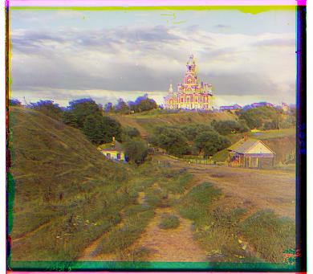

| Image | Metric | Green (dy, dx) | Red (dy, dx) |
|---|---|---|---|
| cathedral | SSD | (5, 2) | (12, 3) |
| cathedral | NCC | (5, 2) | (12, 3) |
| monastery | SSD | (-3, 2) | (3, 2) |
| monastery | NCC | (-3, 2) | (3, 2) |
| tobolsk | SSD | (3, 3) | (6, 3) |
| tobolsk | NCC | (3, 3) | (6, 3) |


Both metrics found exactly the same offsets on all three images. That makes sense given how they differ. NCC subtracts the mean and normalizes, so it doesn't care if one channel is brighter or has more contrast than the other, it only cares whether the two images go up and down together. SSD compares raw pixel values, so it does care. These three plates were exposed similarly enough that the difference didn't matter. I expect NCC to be the safer choice on harder plates where the channels differ more in brightness.
The full-resolution TIFFs are about 3200 × 3700 pixels per channel, roughly 90 times more pixels than the JPEGs, and the channels are misaligned by much more. The largest offset in my results is 178 pixels. A ±15 search can't reach that, and a window wide enough to reach it (±200) would try about 160,000 shifts instead of 961, each one on a far bigger image.
To measure it, I ran the Part 1 brute-force search with SSD on the green channel of church.tif (3202 × 3634). The ±15 search took 8.8 seconds and returned (15, 4), stuck at the edge of the window, when the real offset is (25, 4). That's about 9 milliseconds per candidate, so a ±200 search would take roughly 25 minutes per channel, or close to an hour per image.
The pyramid needs a way to halve an image. I average every 2 × 2 block of pixels into one pixel, using step slices so it runs without loops. If a dimension is odd I trim one row or column first, otherwise the four slices end up different sizes. I average instead of just keeping every other pixel because skipping pixels aliases: fine texture like grass or brick turns into fake patterns, and the small image would align to patterns that aren't really in the photo.
The alignment is recursive. If the image's shorter side is 400 pixels or less, it runs the normal ±15 search from Part 1 and returns. Otherwise it calls itself on half-size versions of both images, doubles the offset that comes back to scale it to the current size, shifts the image by that guess, and runs a small ±2 search to fix the pixel or two lost to rounding. The final offset is the guess plus that small correction.
So a large offset gets found as a small one on a tiny image, and every level on the way back up only checks 25 candidates. The only full ±15 search happens once, at the smallest size. The 15% interior crop from Part 1 still applies at every level, since it's a fraction of the image size.
To test it, I shifted the church blue channel by a known (100, -40), far outside the ±15 window, and aligned it against the original. It returned (-100, 40), the shift that undoes it, in under a second.
One set of parameters for every image: 15% crop, base case at 400 pixels, ±15 at the base and ±2 per level. Times are for aligning both channels, not including loading or saving.
| Image | SSD Green | SSD Red | NCC Green | NCC Red | SSD time | NCC time |
|---|---|---|---|---|---|---|
| cathedral.jpg | (5, 2) | (12, 3) | (5, 2) | (12, 3) | 0.27s | 0.61s |
| monastery.jpg | (-3, 2) | (3, 2) | (-3, 2) | (3, 2) | 0.28s | 0.59s |
| tobolsk.jpg | (3, 3) | (6, 3) | (3, 3) | (6, 3) | 0.28s | 0.58s |
| church.tif | (25, 4) | (58, -4) | (25, 4) | (58, -4) | 1.84s | 3.38s |
| emir.tif | (49, 24) | (66, 44) | (49, 24) | (64, 44) | 1.49s | 2.85s |
| harvesters.tif | (59, 17) | (124, 13) | (60, 17) | (124, 14) | 1.48s | 2.88s |
| icon.tif | (41, 17) | (89, 23) | (41, 17) | (89, 23) | 1.56s | 2.92s |
| ilemselga.tif | (40, 7) | (130, 11) | (40, 7) | (130, 11) | 1.52s | 2.94s |
| melons.tif | (81, 10) | (178, 14) | (81, 10) | (178, 14) | 1.47s | 2.94s |
| religous_painting.tif | (28, 3) | (69, 7) | (28, 3) | (68, 7) | 1.72s | 3.47s |
| self_portrait.tif | (78, 29) | (176, 37) | (79, 29) | (176, 37) | 1.55s | 3.08s |
| siren.tif | (50, -6) | (96, -25) | (49, -6) | (96, -25) | 2.02s | 2.89s |
| three_generations.tif | (52, 14) | (111, 11) | (52, 14) | (111, 11) | 1.80s | 2.76s |
| wharf.tif | (15, -7) | (82, -16) | (15, -7) | (82, -16) | 1.65s | 2.93s |
| piony.tif | (51, 3) | (105, -6) | (51, 3) | (104, -6) | 1.94s | 3.40s |
| person_in_woods.tif | (50, -21) | (148, -42) | (50, -21) | (148, -42) | 1.60s | 3.01s |
| cotton_texttile_mill.tif | (58, -12) | (134, -57) | (58, -13) | (134, -58) | 1.55s | 2.97s |
Every TIFF aligned in about 1.5 to 2 seconds with SSD and about 3 to 3.5 seconds with NCC, well below the one-minute target. NCC takes about twice as long because it computes a mean, a subtraction and a norm for every candidate shift. The two metrics agree exactly or within one pixel on every image. The three JPEGs give the same offsets as brute force, because their shorter side is under 400 pixels, so they go straight to the base case.
The images below use NCC. The blue-purple tint and the colored strips along the edges aren't alignment errors.
The tint is because the three channels have different overall brightness, and the strips are the plate's
scanned border plus the rows that np.roll wrapped around.
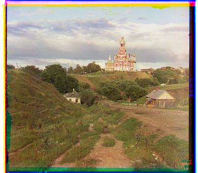

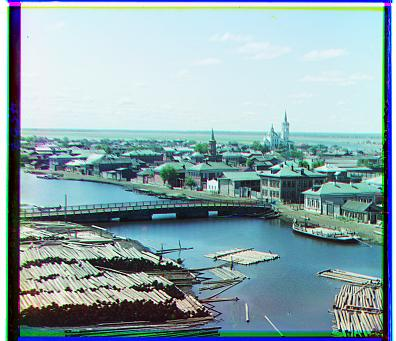

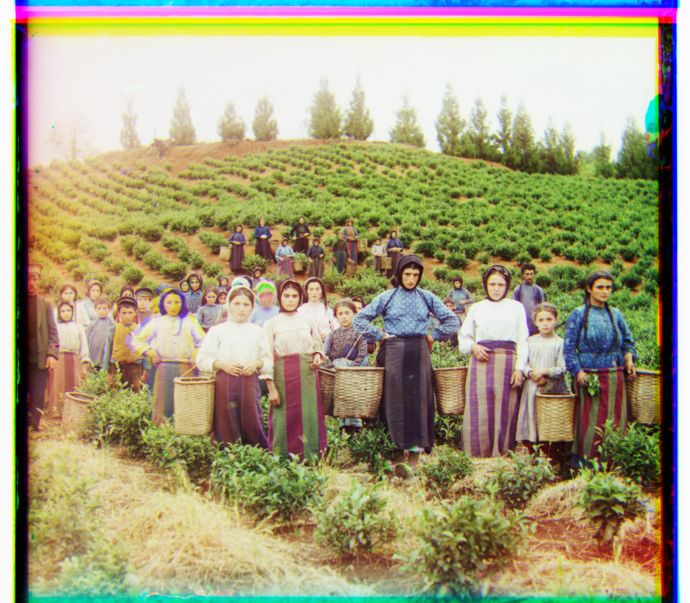

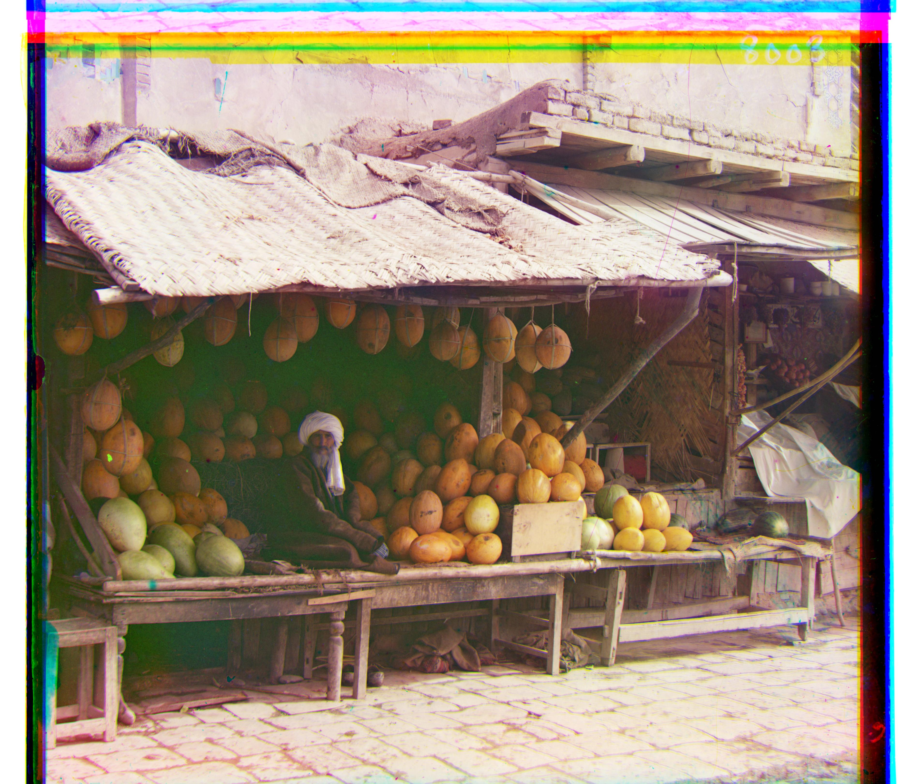


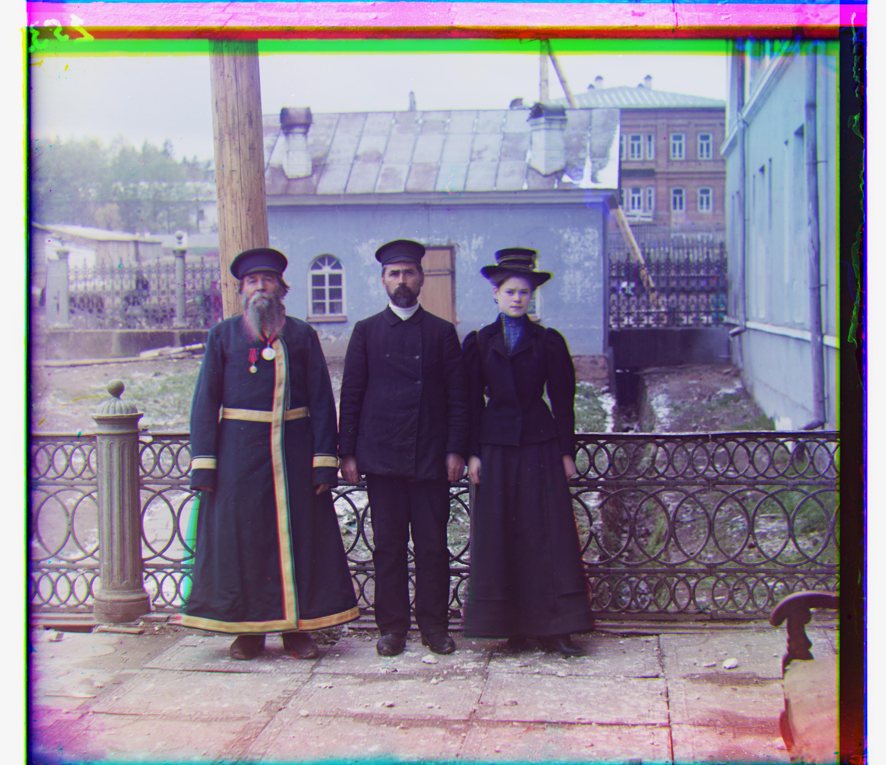
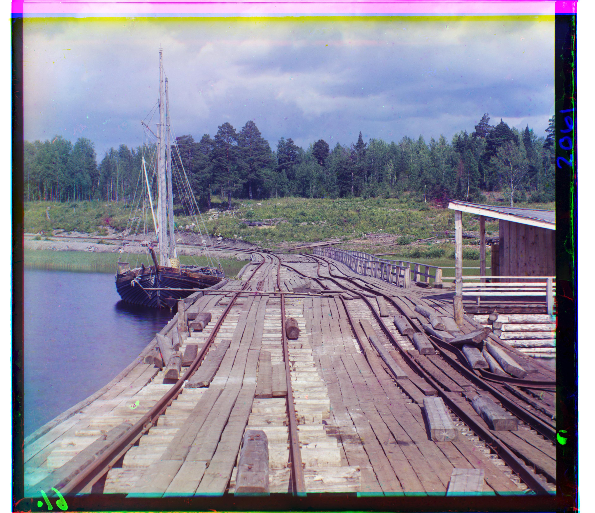
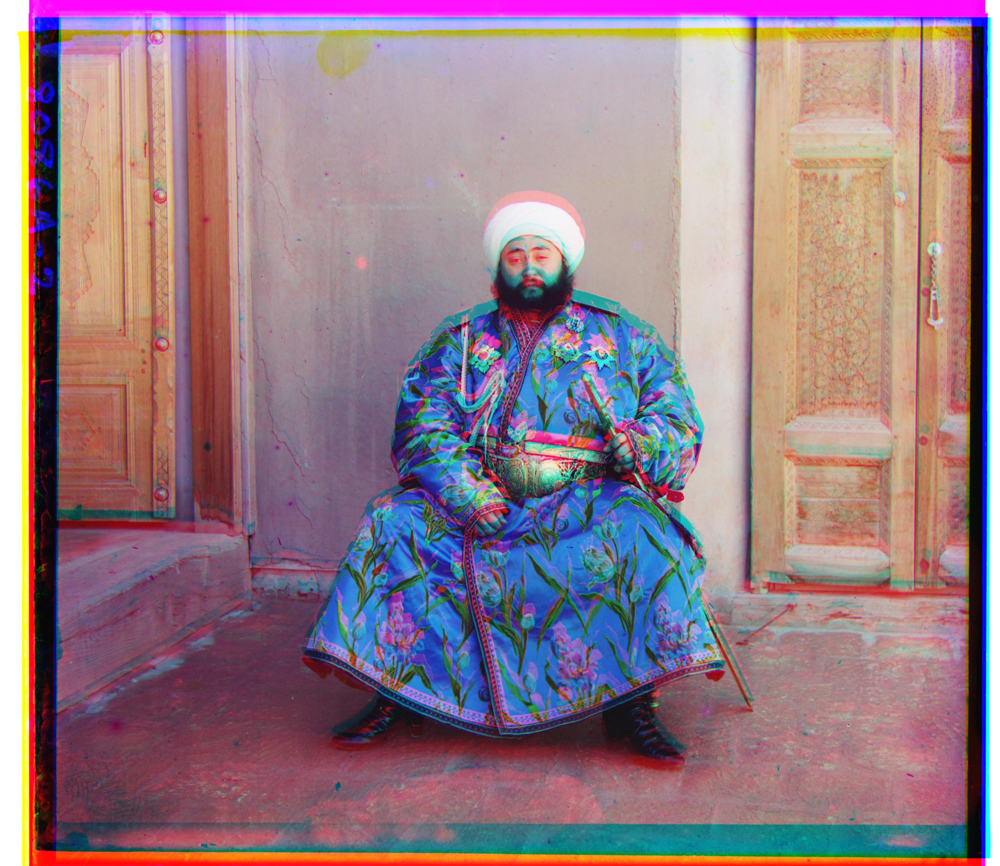
Emir is the one image that didn't align. Green is fine, but red came out at (64, 44) with NCC and (66, 44) with SSD, when it should be about (107, 40). Red sits roughly 40 rows too high, which you can see as a red copy of the turban above the real one and doubled eyes.
The reason is the Emir's robe. It's bright blue, so it's very bright on the blue plate and very dark on the red plate. Both of my metrics compare brightness, so the red channel doesn't look like the blue one at any shift, and the search settles on a wrong position that happens to score a little better. NCC doesn't save it either. NCC ignores a brightness offset or contrast change across the whole image, but here the channels differ in opposite directions in different parts of the picture: the robe is much brighter in blue, while the wall behind him isn't. No single offset or scale can make them match.
A way to fix this would be to align on edges instead of brightness, since the outline of the robe is an edge in every channel even though its brightness isn't the same.
I picked three more plates from the Library of Congress Prokudin-Gorskii collection and ran them with the same parameters. All three aligned.
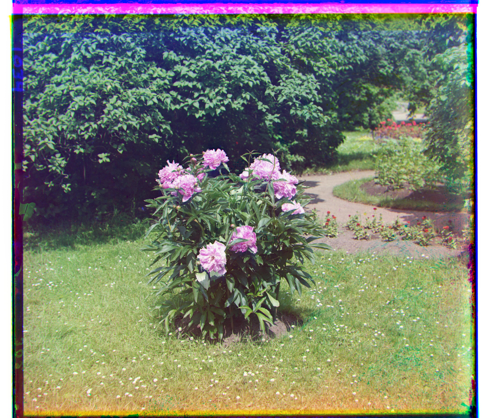
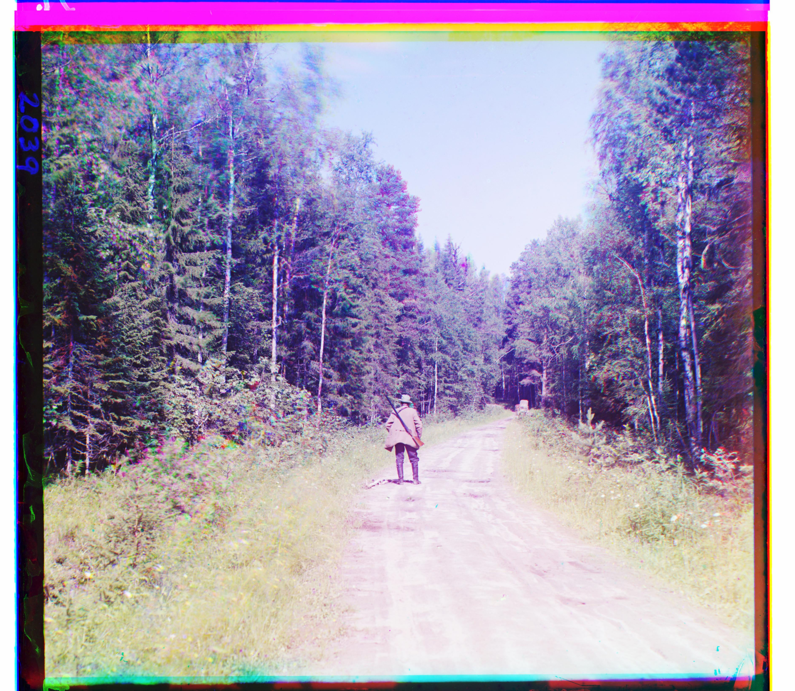
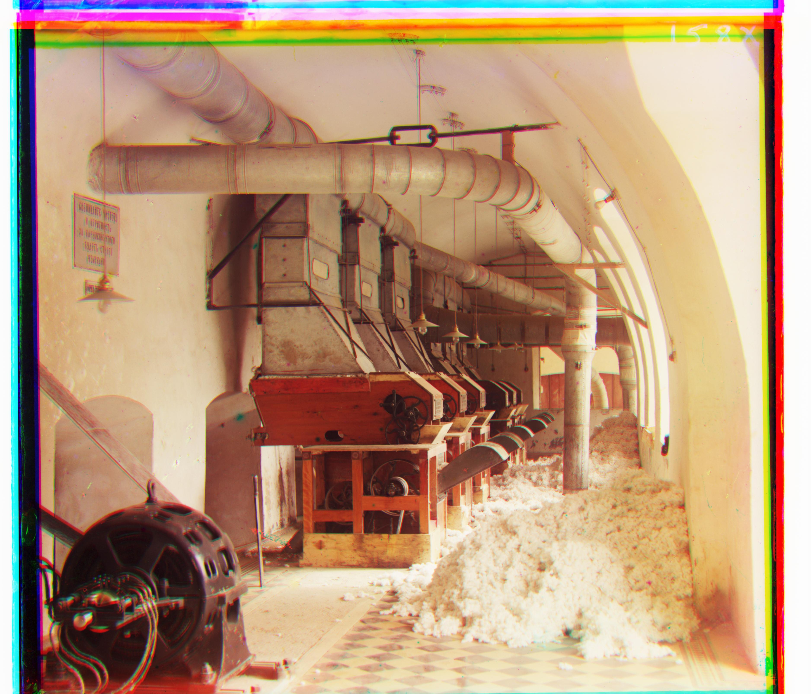